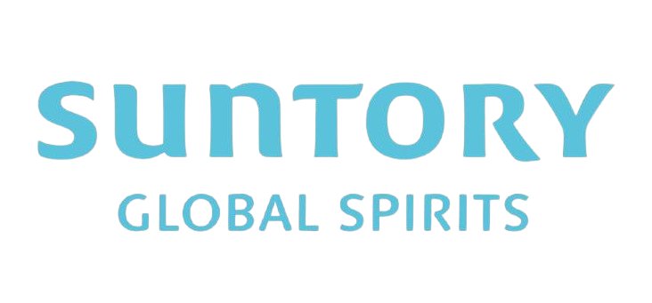
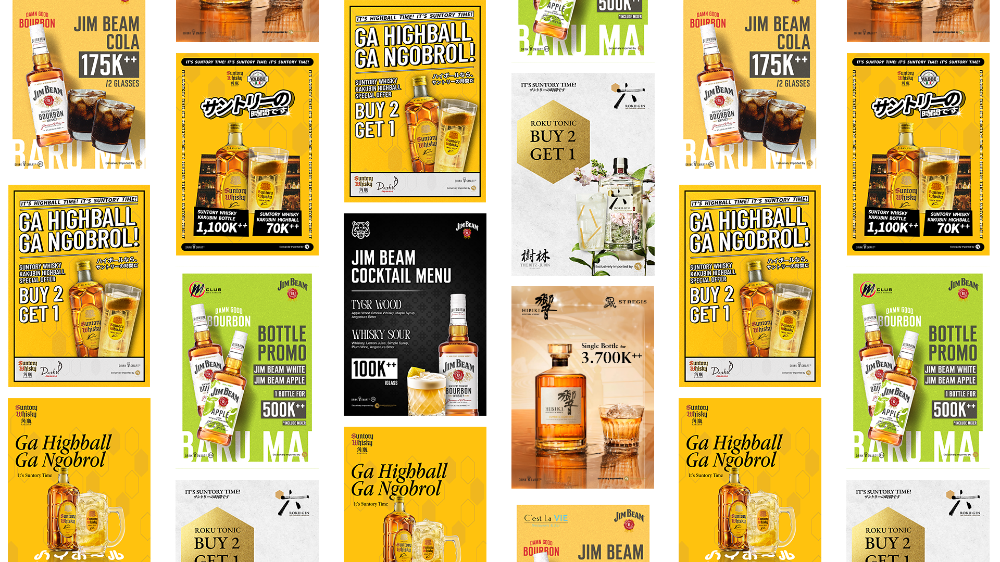

The Products

Suntory Global Spirits Inc., formerly known as Beam Suntory, is the third-largest producer of distilled beverages worldwide. Social media content, layout design, and print materials for Suntory brands distributed through PT Sumber Anggur Sejahtera, spanning Jim Beam, Roku Gin, Hibiki, and Suntory Whisky Kakubin, including event activations, bar mockups, and billboard visualisations.
